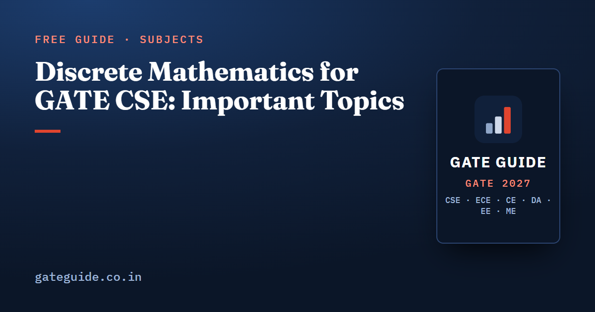

Discrete Mathematics for GATE CSE: Important Topics

Discrete mathematics is the half of the GATE CSE mathematics block that computer science students already half-know, and it is the half that repeats most reliably. Graph counting and propositional logic top the evidence from past papers, followed by first-order logic, counting, relations and functions, and recurrences. This guide gives the syllabus, the marks, a priority order, the formulas that carry the questions and the traps built into the distractors.
In this guide
Key takeaways
- Discrete mathematics sits inside Section 1 of the official syllabus, not as a separate subject, and its wording is unchanged from 2026.
- Where analysts separate it out, it has carried roughly 3–12 marks per paper since 2016, with a median near 6–7. These are unofficial figures.
- Graph degree and edge counting with Euler's formula is the single most repeated computation in the block.
- Since 2014 most counting questions are numerical-answer type; since 2021 the "which of the following are true" items on groups, lattices and quantifiers are multiple-select with no partial credit.
- The subject is wide and shallow. Twenty standard forms, each solved once, beat deep mastery of any three.
What the GATE 2027 syllabus names
The discrete mathematics part of Section 1 reads: propositional and first order logic; sets, relations, functions, partial orders and lattices; monoids, groups; graphs covering connectivity, matching and colouring; and combinatorics covering counting, recurrence relations and generating functions.
This wording is identical to GATE 2026. The last substantive change came in GATE 2021, when "Monoids" was added to the line. If you are checking what moved elsewhere in the paper, see what changed in the GATE CSE 2027 syllabus. Always confirm the final text at gate2027.iitm.ac.in.
How many marks discrete mathematics carries
The official pattern allots about 13 marks to Engineering Mathematics as a whole, against 15 for General Aptitude and about 72 for core subjects. Analysts who split the block report the figures below. They come from third-party compilations, not from the organising institute, and sources differ by 2–3 marks because questions on graphs, counting and recurrences are sometimes credited to Algorithms instead.
| Paper | Discrete maths marks (analyst figures) |
|---|---|
| 2016 | 5 |
| 2017 | 7 |
| 2018 | 10 |
| 2019 | 5 (one source counted 11) |
| 2020 | 10 |
| 2021 (two shifts) | 9 |
| 2022 | 12 |
| 2023 | 6 |
| 2025 | 5 |
| 2026 Shift 1 | 5 |
The 2024 papers are not reported with a discrete and non-discrete split. Read across the full paper in the GATE CSE subject-wise weightage table. The practical reading: discrete mathematics and the linear algebra, calculus and probability half trade places from year to year, so neither can be dropped. Discrete was the heavier half in 2018, 2020 and 2022; the other half was heavier in 2016, 2017 and 2025.
Priority order for GATE 2027
The tiers below come from the analytical scoring used in the book, which weighs long-term frequency, recent frequency, the number of distinct variants a topic generates, syllabus centrality, a "due" signal, format fit and other evidence. They rank the strength of the evidence; they are not probabilities that a topic appears.
| Tier | Discrete maths topics | Usual format |
|---|---|---|
| Tier 1 | Graph degree and edge counting, Euler's formula and planarity; propositional logic | NAT 1–2 marks; MCQ or MSQ 1 mark |
| Tier 2 | First-order logic; counting (permutations, pigeonhole, inclusion–exclusion); sets and relations counting; recurrence relations; connectivity, trees and spanning trees; colouring; functions counting; groups and monoids; posets and lattices | NAT and MSQ, 1–2 marks |
| Tier 3 | Generating functions; matching | MCQ or NAT, 2 marks |
Matching is the one graph topic the syllabus names explicitly that has been asked sparsely, which is why it carries a genuine "due" signal rather than a frequency signal.
This article ranks the topic groups. The mathematics chapter of the GATE CSE 2027 book scores all 25 mathematics subtopics on eight weighted factors, lists the years each was asked with its confidence marked where the reconstruction is approximate, and backs each pattern with worked questions.
The most-tested topics and how they are asked
Graphs
The workhorse is counting. You are given part of a degree distribution and asked for vertices or edges, or told a planar graph has all faces of one length and asked for edges or faces. The recent pattern combines two constraints in one numerical answer, such as planarity plus a degree condition, or chromatic number plus an edge count.
A short worked example of the planarity form: a connected planar graph on 8 vertices has every face bounded by exactly 4 edges. Each edge borders two faces, so:
Connectivity, spanning-tree counts and colouring form the second layer: maximum edges in a disconnected graph, the number of labelled trees, the chromatic number of a wheel or a complement, and bipartite tests through odd cycles.
Logic
Propositional logic is a reliable 1-mark item: identify the formula that is not a tautology, rewrite an implication, or count the assignments that make a formula false. First-order logic is the most repeated conceptual trap in the block. Translation questions punish pairing a universal quantifier with a conjunction, or an existential quantifier with an implication, and quantifier-order questions ask whether one nested form implies the other. Both have been mostly multiple-choice; the "which statements are valid" variants moved to multiple-select after 2021.
Sets, relations and functions
Counting dominates. You are asked for the number of relations on a small set with stated properties, the number of equivalence relations with a given number of classes, or the number of onto functions from one small set to another. Property questions ask whether a described relation such as divisibility or congruence is reflexive, symmetric, antisymmetric or transitive, and these now appear as multiple-select sets.
Combinatorics
Recurrences are almost always 2 marks: solve a second-order linear recurrence and evaluate it at a specific index, or set up a recurrence from a string-counting description such as strings avoiding two consecutive zeros. The counting group covers pigeonhole minimum picks, inclusion–exclusion on divisibility or derangements, non-adjacent selections and bounded integer solutions. Generating functions are named in the syllabus but have appeared roughly seven times in 27 years, so learn coefficient extraction and move on.
Groups, posets and lattices
Group questions test the axioms for a defined operation, the order of an element from an equation such as , the number of generators of an additive group of integers modulo , and the consequences of Lagrange's theorem for subgroup sizes. Lattice questions ask whether a described poset is a lattice, or whether a divisor lattice is distributive, complemented or Boolean. Both groups became more common as multiple-select items after 2021.
Formulas that carry the questions
| Idea | Formula |
|---|---|
| Handshaking | |
| Planarity | ; ; bipartite planar |
| Labelled trees | |
| Spanning trees of a complete bipartite graph | |
| Perfect matchings of a complete graph on vertices | the double factorial |
| Relations on an -set | reflexive ; symmetric ; reflexive and symmetric |
| Onto functions onto a 3-set | |
| Self-complementary graphs | exist only when or |
| Cyclic groups | generators of number , Euler's totient of |
For example, the number of relations on a 3-element set that are both reflexive and symmetric is
The diagonal is forced, and the three off-diagonal pairs are free. Keep these in one place with the rest of the paper's formulas in the GATE CSE formula sheet.
Traps that repeat
- Pairing the universal quantifier with a conjunction, or the existential quantifier with an implication, in a translation question.
- Assuming that and are interchangeable. Only one direction holds: .
- Forgetting that reflexivity fixes the diagonal when counting symmetric relations, and using the wrong exponent.
- Using the bound for a bipartite planar graph, where the correct bound is .
- Treating "connected" and "has edges" as one condition. A tree needs both.
- Counting a perfect-matching total as a plain factorial quotient instead of the double factorial.
- Treating the integers modulo without zero as a group under multiplication for composite . That works only when is prime.
- Off-by-one in pigeonhole: guaranteeing a repeat needs one more pick than the number of classes.
A wider list across every subject is in common mistakes that cost marks in GATE CSE.
A study order that works
- Graphs first. Degree sums, Euler's formula, tree and spanning-tree counts, chromatic numbers. This is the largest and most repeated group and it pays again in Algorithms.
- Logic next. One sitting on propositional forms and one on quantifiers, with translation and negation drilled until they are automatic.
- Counting and relations together. They share the inclusion–exclusion machinery, and the formulas above cover most variants.
- Recurrences. The characteristic-equation method is enough. It also serves the recurrence questions in Algorithms.
- Groups and lattices. Short topics, high return, now mostly multiple-select.
- Generating functions and matching last. One worked example each.
Treat every numerical answer as a precision test. The recent papers are described by analysts as calculation-intensive rather than conceptually deeper, so the marks go to whoever counts carefully, not to whoever knows more theory.
Frequently asked questions
Which discrete mathematics topics are most important for GATE CSE 2027?
On past-paper evidence the two strongest are graph degree and edge counting with Euler's formula, and propositional logic. The next group is first-order logic, counting by pigeonhole and inclusion-exclusion, relations and functions counting, recurrence relations, and connectivity and spanning trees. Groups, lattices and colouring follow close behind.
How many marks does discrete mathematics carry in GATE CSE?
Third-party analyst compilations that separate it from the rest of mathematics put discrete mathematics at 3 to 12 marks per paper between 2016 and 2026, with a median near 6 or 7. These figures are unofficial and analysts differ by 2 to 3 marks because some count graph and counting questions under other subjects.
Is discrete mathematics part of engineering mathematics in GATE CSE?
Yes. The official GATE CS syllabus places discrete mathematics inside Section 1, Engineering Mathematics, alongside linear algebra, calculus, and probability and statistics. Many paper analyses report it separately, which is why published weightage numbers for the two differ from source to source.
Has the discrete mathematics syllabus changed for GATE 2027?
No. The discrete mathematics wording in the GATE 2027 CS syllabus is unchanged from 2026. The last change was in GATE 2021, when Monoids was added to the line. Numerical Methods left the paper in 2016 and has not returned. Confirm the current text at gate2027.iitm.ac.in before you plan.
Is graph theory important for GATE CSE?
Very. Degree-sum and edge counting has appeared in most papers since 2004, and planarity through Euler's formula is a recurring 2-mark item. Graph theory also feeds algorithms directly, since spanning-tree counts, bipartiteness and connectivity arguments reappear in minimum spanning tree and traversal questions.
Are groups and lattices still asked in GATE CSE?
Yes, though less often than graphs or logic. Group axiom checks, order of an element and Lagrange's theorem recur, and lattice questions ask whether a described poset is a lattice or whether a divisor lattice is distributive or Boolean. Since 2021 these appear more often as multiple-select questions.
Sources
- GATE 2027 official website (IIT Madras)
- GATE 2027 CS syllabus (official PDF)
- GATE 2027 question paper pattern (official)
- GeeksforGeeks subject-wise weightage for GATE CS
- gateexam.info subject-wise weightage 2009–2019
- GATE Overflow previous year questions
Dates, fees and the syllabus are set by the GATE 2027 organising institute and can change. Always confirm at gate2027.iitm.ac.in.